CANopener user guide
CANopener is an open-source CAN engineering toolbox for Windows (running it from source on Linux has not been tried yet). It is built to replace PCAN-View (receive list, transmit list, trace, record and replay, bus statistics) with many adapters, and adds CANopen node commissioning, DBC / CANopen / J1939 decoding, dashboards, plugins and an MCP endpoint, so Claude can read the bus and, with your approval, act on it.
CANopener has not yet been tested with real adapters or devices: everything so far was tested on its virtual bus and simulator. The Adapters table shows what has been confirmed. Where this guide describes how an adapter or a real bus behaves, read it as what CANopener asks the driver for, until a test confirms it.
Most of this guide can be tried without hardware: CANopener has a built-in simulator with three made-up CANopen devices and some J1939 traffic. All screenshots were taken with it (plus a DBC file, an EDS file and a few transmit entries).

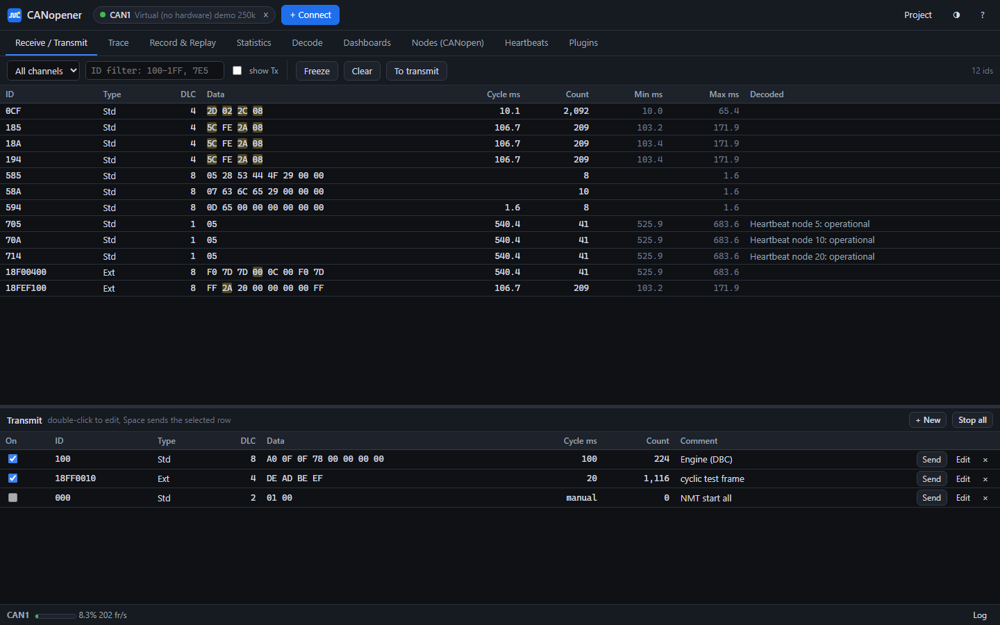
Getting started
Download and start
- Download
canopener-<version>-win64.zipfrom the project's Releases page. - Unzip the whole folder somewhere you can write to, for example Documents or the Desktop. Not into
Program Files: CANopener keeps its recordings, logs and settings next to the exe. - Double-click
canopener.exe. The app opens in its own window.
The first time, Windows SmartScreen may say "Windows protected your PC", because the exe is not signed. Click More info, then Run anyway.
CANopener runs as a small local server with the window on top. Double-clicking canopener.exe again opens a
second window onto the same running CANopener, so both windows show the same bus. There is only ever one
CANopener per PC and port.
The window needs the Microsoft Edge WebView2 runtime, which Windows 10 and 11 usually have. Without it, CANopener opens in your web browser instead.
Your first connection
- Click + Connect in the top bar (or press Ctrl+K).
- Pick your adapter from Detected adapters. This fills in the interface and channel.
- Choose the Bit rate of your bus. Tick Listen-only if you only want to watch a running machine.
- Click Connect.
The adapter shows as a chip (CAN1) in the top bar, and frames start to appear in the receive list. The status bar at the bottom shows the bus load and frames per second.
Try it without hardware
- Click + Connect.
- Choose the interface Virtual (no hardware).
- Leave Start simulated devices on this virtual bus ticked.
- Click Connect.
The simulator puts these made-up devices on the virtual bus:
| Node | Name | What it does |
|---|---|---|
| 5 | Demo device A (SDO) | Answers SDO, sends heartbeats and a TPDO. Its node id is set with object 0x2100:00 and applied by a store (0x1010:01) plus an NMT reset. Its bit-rate recipe writes 0x2101:00; the simulator accepts it but keeps running (a virtual bus has no bit rate). CANopener has a recipe for it. |
| 10 | Demo device B (SDO, power cycle) | Like A, node id in 0x2110:01, but the new id only takes effect after a power cycle. The simulator cannot be switched off: it applies the stored id at the next NMT reset instead (Decode > CANopen > Reset). CANopener has a recipe for it. |
| 20 | Demo LSS device | Changes its node id and bit rate over LSS (CiA 305). |
There is also a fast free-running frame (0x0CF, 100 times a second), J1939 traffic (two ECUs claiming addresses, DM1 trouble codes from both, one of them by BAM transport protocol every 30 s) and, every minute, an emergency message from nodes 5 and 10. The devices really change their node id when you commission them, so you can practise every node workflow safely.
The virtual bus exists only inside CANopener. It is not visible to other programs.
Closing
Closing the first CANopener window saves the settings, stops every cyclic transmit and a running replay, finishes a running recording and closes the adapters: nothing keeps sending after CANopener has closed. A second window (started while CANopener runs) only looks at the same CANopener; it closes when the first one does.
Without the WebView2 runtime CANopener opens in your browser instead; closing the browser does not stop it. Click OK in the "CANopener is running in your browser" message to stop it.
Connecting adapters

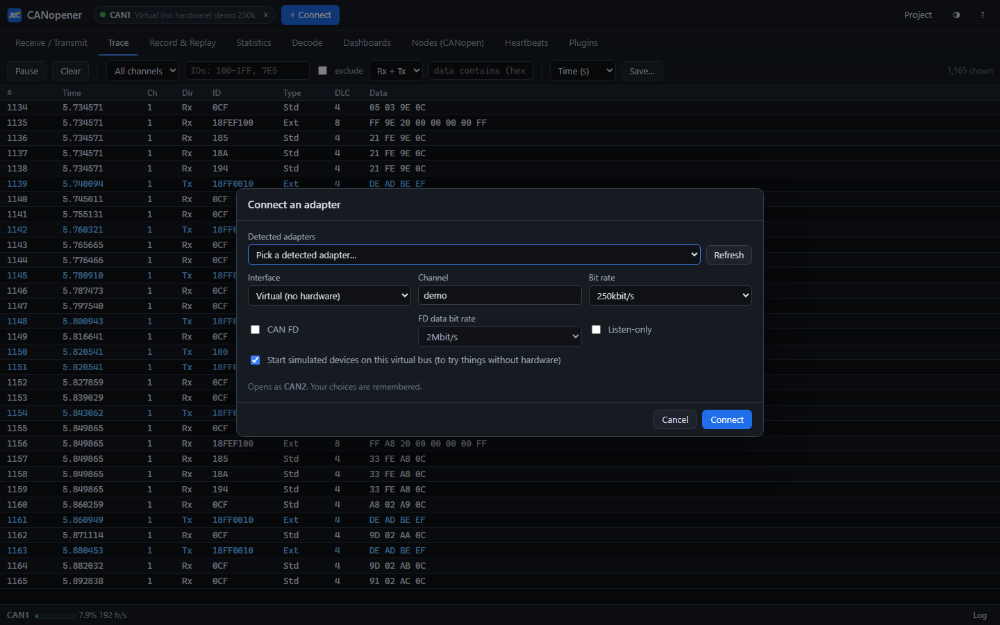
The Connect an adapter dialog:
- Detected adapters lists what is plugged in right now. Picking an entry fills in the interface and channel. Refresh searches again (for example after plugging an adapter in).
- Interface: the adapter type. Choose it by hand if your adapter is not detected. The line under the dialog says what that interface needs (for example a driver).
- Channel: the adapter's channel. Leave it empty for the default, shown as the placeholder.
- Bit rate: the nominal bit rate, 10 kbit/s to 1 Mbit/s. A rate the adapter's driver cannot do is refused with a message that lists the rates it can do. It is never silently replaced by another rate.
- CAN FD and FD data bit rate: only for interfaces that support CAN FD.
- Listen-only: CANopener opens the adapter in its listen-only (silent) mode. See below.
- Start simulated devices on this virtual bus: only for the Virtual interface.
The dialog shows which channel the adapter will open as (CAN1, CAN2, ...). Your choices are remembered and filled in next time.
Adapters
Tested says whether the adapter has been confirmed working with CANopener on a real bus. The notes say what CANopener asks each driver for (listen-only, CAN FD); for an untested adapter that is not yet confirmed. If you use one of them, a report of what works and what does not helps (an issue on the project's GitHub page).
| Adapter | Interface | Channel | Tested | Notes |
|---|---|---|---|---|
| PEAK PCAN-USB | PEAK PCAN-USB | PCAN_USBBUS1, PCAN_USBBUS2, ... |
Not yet | Needs the PEAK driver. Listen-only and CAN FD. |
| Kvaser | Kvaser | 0, 1, ... |
Not yet | Needs the Kvaser driver. Listen-only (silent mode) and CAN FD. |
| CANable with slcan firmware | CANable / slcan (COM port) | the COM port, for example COM5 |
Not yet | Listen-only. CAN FD (CANable 2) with a data bit rate of 2 or 5 Mbit/s only. |
| CANable with candleLight firmware | CANable / candleLight (USB) | 0 |
Not yet | A USB device; libusb is included. Classic CAN only, no listen-only. |
| Vector | Vector | the driver's global channel index, 0, 1, ... |
Not yet | Needs the Vector driver library. Listen-only and CAN FD. |
| IXXAT | IXXAT | 0, 1, ... |
Not yet | Needs the IXXAT VCI driver. CAN FD; no listen-only. |
| Linux SocketCAN | Linux SocketCAN | can0, ... |
Not yet | Linux only (from source). Set the bit rate in the operating system (ip link); the bit rate field is disabled. |
| Virtual | Virtual (no hardware) | any name, default canopener |
Yes (the test suite runs on it) | A bus inside CANopener for trying things and for tests. |
A CANable runs one of two firmwares: slcan boards normally show up in Device Manager as a COM port, candleLight boards as a USB device. CANopener has a backend for each.
The Bit rate list offers 10, 20, 50, 83.3, 100, 125, 250, 500, 800 and 1000 kbit/s. CANopener refuses a rate that a backend's driver does not list (slcan has no 800 kbit/s, IXXAT no 83.3 kbit/s) and says so when you connect. Whether each adapter really runs every rate it accepts has not been tested yet.
More adapters (help wanted)
We are working on support for cheaper and wireless adapters, as plugins shipped with CANopener. None of it is available yet, and nothing here is a recommendation: we do not have the hardware to test these devices. The plan:
- ESP32 boards running GVRET firmware (ESP32RET and other SavvyCAN-compatible devices), over USB and WiFi.
- slcan over WiFi (TCP), for devices that speak the same protocol as a CANable, such as WiCAN.
- ELM327 and OBDLink OBD-II dongles, over USB, Bluetooth and WiFi, as bus monitors. The Linux kernel's ELM327 driver documentation notes that a busy bus can overflow the chip's buffer ("BUFFER FULL") and that clones do not all implement every feature. We have not measured this ourselves.
New adapter types will open listen-only by default.
CANopener is open source, so you can help. If you own one of these devices and can test, or want to write or improve support for it, open an issue on the project's GitHub page and say which device and firmware you have. A device joins the table above only after it has been tested.
Listen-only
In listen-only (silent) mode an adapter should send nothing onto the bus, not even the acknowledge bit, so you can watch a live machine without disturbing it. CANopener asks the driver for this mode; that the adapters really stay silent has not been confirmed on hardware yet.
On a listen-only channel nothing is transmitted: sending and node changes are refused, cyclic entries stop, a replay onto it sends nothing (each frame counts as a send error), and a node scan only listens.
A listen-only adapter that is the only other device on the bus sees nothing useful: a frame nobody acknowledges is repeated by its sender and shows as errors. At least one other node must acknowledge.
CAN FD
Tick CAN FD and choose the FD data bit rate. The nominal bit rate stays the arbitration rate. Received FD frames show as type FD (or FD BRS with bit rate switching) in the receive list and the trace. To send FD frames, tick CAN FD (and Bit rate switch if wanted) in the transmit entry. CAN FD has not yet been tested with FD hardware.
Several channels
Click + Connect again to open another adapter, or another channel of the same adapter. Each opens as the next free channel (CAN2, CAN3, ...) and gets its own chip and its own part of the status bar.
- The receive list shows a Ch column as soon as more than one channel is connected; the trace always has one. Both have a channel selector. Statistics shows one card per channel.
- A transmit entry has a Channel.
- A recording records every channel that is connected when it starts. A channel connected later is not added to a running recording.
The × on a chip disconnects that channel.
The screen
- Top bar: the CANopener logo; one chip per channel (state dot, name, adapter, channel and bit rate,
FDandLOfor listen-only; hover a red chip for its error); + Connect; a red REC indicator while recording; Project; the light / dark switch (◑); ? for the About box. - Tabs: Receive / Transmit, Trace, Record & Replay, Statistics, Decode, Dashboards, Nodes (CANopen), the tabs of plugins (the shipped example adds Heartbeats), and Plugins.
- Status bar: per channel the bus load bar and percentage, frames per second, the bus state when it is not ACTIVE (warning, passive, bus off) and the driver reports it, and error counters (error frames / receive errors / send errors). Log opens the event log; its badge counts new events.
The event log lists what happened: connects and disconnects, adapter errors, recordings, node jobs. Warnings and errors also show briefly as a message in the corner.
The About box (?) shows the version, the app folder, the MCP address for Claude, how many plugins loaded and a User guide button that opens this guide.

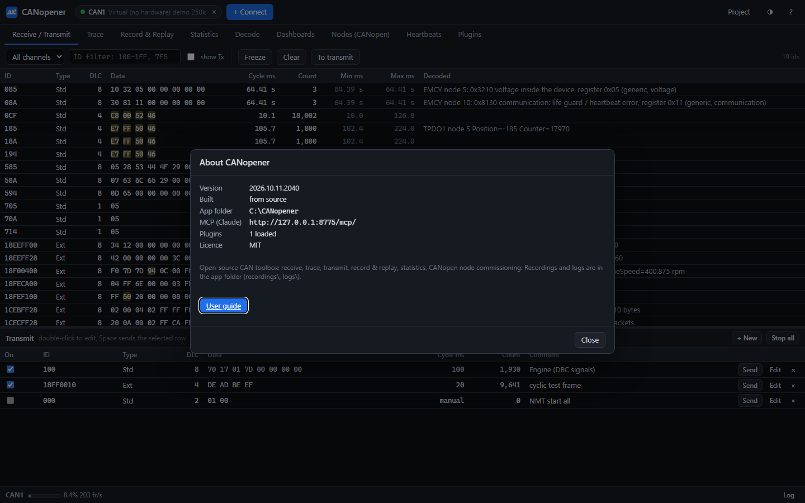
Selecting, copying and right-click menus
The lists (receive list, transmit list, trace, recordings, busiest IDs, heartbeats) select whole rows. The selection stays while the list keeps updating, and while you hold the mouse button the receive list, busiest IDs and heartbeats do not redraw.
| Do this | It does |
|---|---|
| Click a row | Selects it. |
| Shift+click | Selects every row from the last clicked one to this one. |
| Ctrl+click | Adds the row to the selection, or takes it out. |
| Drag over rows with the mouse | Selects the rows you pass. Hold the mouse above or below the list and it scrolls. |
| Ctrl+A | Selects every row shown (click into the list first). |
| Esc | Clears the selection. |
| Ctrl+C | Copies the selected rows as text: a header line, then one line per row, the columns as shown, separated by tabs. |
| Ctrl+V in the transmit list | Pastes frames (see below). |
| Right-click | The menu for the row (it first selects the row if it was not selected). |
In the trace, clicking or right-clicking a row stops the view from following the newest frames, so the rows stay where they are (Jump to latest follows again). The selection works while the trace runs and while it is paused; rows that drop out of the trace buffer drop out of the selection.
Other text (dialogs, notices, logs, the Decode tables, the statistics cards) can be selected with the mouse as usual; the Decode tables and the statistics cards do not redraw while you select text in them. Right-click on selected text offers Copy.
What the right-click menus offer:
| Where | Menu |
|---|---|
| Receive list | Copy rows, Copy ID(s), Copy data (hex), Add to transmit list (opens the transmit dialog filled in), Show only this ID in the trace, Hide this ID in the trace, Freeze / Unfreeze view, Select all. |
| Transmit list | Send once, Edit, Duplicate, Start / Stop cyclic (for entries with a cycle time), Delete (several entries: after a question), Copy rows, Paste frames, Select all. On the empty part of the list: New entry, Paste frames, Stop all cyclic. |
| Trace | Copy rows, Copy as .trc lines (PCAN-View .trc 1.1 rows), Copy ID(s), Copy data (hex), Show only this ID, Hide this ID, Clear the ID filter, Add to transmit list, Pause / Resume, Select all. |
| Recordings | Open, Replay, Download, Copy file name, Copy full path, Copy rows. |
| Statistics, Busiest IDs | Copy rows, Copy ID(s), Show only this ID in the trace, Hide this ID in the trace. |
| Nodes, scan result | Set ID, Bit rate, Use in the custom sequence, Copy identity (vendor, product, revision, serial), Copy row, Copy table. |
| Nodes, job log; event log | Copy the whole log. |
| Decode tables | Copy value, Copy row, Copy table; on object dictionary rows also Read from the node (an SDO read, like the Read button). |
| Dashboards, a widget | Copy value (numeric tile, gauge, lamp), Copy signal name(s), Widget settings. |
| Heartbeats | Copy rows, Copy node ID(s), Show only this heartbeat in the trace. |
| A channel chip | Reconnect, Disconnect (or Close for a file), Copy. |
| EDS editor, object tree and sub-index table | Copy index, Copy name, Copy value, Copy as rows, Open in the PDO editor (PDO objects), Add a sub-index, Delete the sub-index or object. |
| EDS editor, problems | Go to the object, Copy problem, Copy all problems. |
| EDS editor, PDO list | Edit, Copy COB-ID, Copy the mapping (the encoded entries), Delete. |
| Sniffer, an id | Details and candidates, Copy ID, Copy data, Copy row, Copy all rows shown, Show only / Hide this ID in the trace, Add to transmit list, Notch. |
| Sniffer, a candidate | Make a quick signal, DBC lines, Copy bit range (DBC notation), Copy value now. |
"Show only" and "Hide" set the trace's ID filter (hiding adds to the IDs already hidden) and empty the trace, like any filter change.
Paste frames into the transmit list: click into the transmit list and press Ctrl+V, or use Paste
frames in its menu. It reads lines of an ID and data bytes, for example 18FEF100 FF 80 20 00 00 00 00 FF,
candump lines (123#1122, 123#R, (1.5) can0 123#1122), .trc rows (versions 1.0, 1.1 and 2.x, as CANopener
records them), or rows copied from the receive list, trace or transmit list. A line whose DLC does not match its
bytes is listed as not understood. A dialog lists the frames
(and the lines it did not understand) and asks for a channel for frames without one; Add adds them as manual
entries without a cycle time. Nothing is sent until you click Send. If the menu item cannot read the
clipboard (the browser does not allow it), it says so: press Ctrl+V in the list instead.
Checked in a browser and in the desktop window: the row selection, Ctrl+C, the right-click menus, the Cut / Copy / Paste menu of text fields and Paste frames from the menu. Rows copied with Ctrl+C paste into Excel with the columns in place.
Receive / Transmit
The main tab, as in PCAN-View: the receive list on top, the transmit list below. Drag the bar between them to resize.
Receive list
One row per CAN ID (per channel):
| Column | Meaning |
|---|---|
| Ch | The channel (only with several channels). |
| ID | Hex; 3 digits for 11-bit, 8 digits for 29-bit IDs. Tx marks frames CANopener sent. |
| Type | Std, Ext, FD, FD BRS, RTR, Error. |
| DLC | Data length. |
| Data | The last data. Bytes that changed in the last 1.5 s are highlighted. |
| Cycle ms | The last interval between two frames of this ID. |
| Count | Frames received. |
| Min ms / Max ms | The shortest and longest interval seen. |
| Decoded | The decoded content, as soon as a decoder knows this ID (DBC, CANopen EDS, heartbeats, EMCY, J1939). |
- Click ID, DLC, Cycle ms or Count in the header to sort; click again to reverse.
- ID filter takes hex IDs and ranges, separated by commas:
100-1FF, 7E5. - The channel selector shows All channels or one.
- show Tx adds rows for frames CANopener itself sent.
- Freeze stops the view from updating (the button then says Frozen). Traffic keeps being counted.
- Clear resets the rows and counters of the selected channel (or of all channels).
- To transmit copies the selected row into a new transmit entry, with its data, flags and cycle time. A double-click on a row does the same.
Transmit list
| Column | Meaning |
|---|---|
| On | Starts or stops a cyclic entry. Disabled for an entry without a cycle time. |
| ID, Type, DLC, Data | The frame. |
| Cycle ms | The cycle time, or manual. |
| Count | Frames sent. |
| Comment | Your note. An error badge shows if sending failed (hover it for the reason). |
- + New adds an entry. Stop all stops every cyclic entry.
- Send sends the entry once. Or click a row to select it and press Space.
- Edit (or a double-click on the row) changes it. × deletes it.
The transmit dialog:

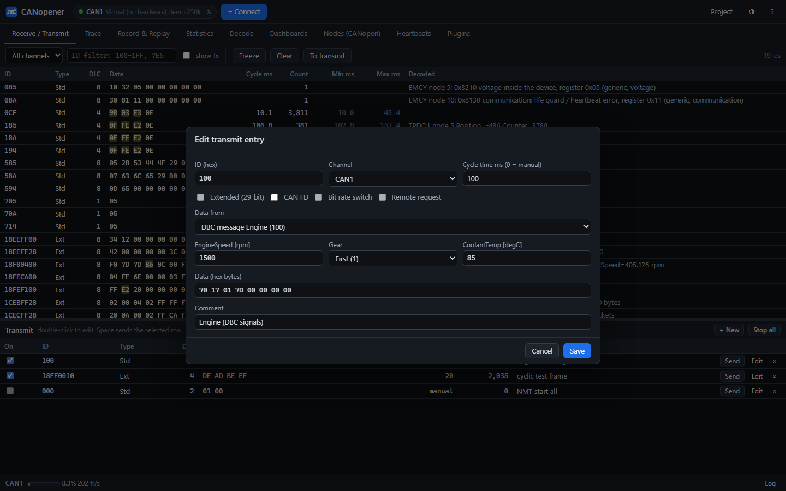
- ID (hex), Channel, Cycle time ms (0 = manual).
- Extended (29-bit), CAN FD, Bit rate switch (FD only), Remote request (then a Remote request DLC field appears).
- Data from: appears once a DBC file is loaded (see Decode). Choose raw bytes to type the data yourself, or a DBC message to type signal values: one field per signal, with a list for signals that have named values. The ID and data fields are then not used: when you click Add (or Save), CANopener encodes the bytes with the DBC and the transmit row shows them.
- Data (hex bytes): for example
11 22 33 44. - Comment.
The transmit list is saved automatically. After a restart the entries are back, but cyclic entries never start by themselves: tick On again.
Trace
Every frame in time order, received and sent, from all channels. The view scrolls with the newest frames; scroll up to look at older ones (a Jump to latest button brings you back).

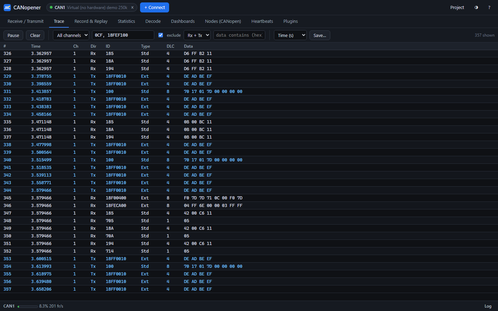
-
Pause stops the live view (Paused - resume continues). Recording and counters keep running. A
pausedrow marks the gap. -
Clear empties the view.
-
Filter:
- the channel selector;
- IDs: hex IDs and ranges,
100-1FF, 7E5; tick exclude to hide these IDs instead of showing only them; - Rx + Tx, Rx only or Tx only;
- data contains (hex): frames whose data contains these bytes, for example
2F 00 21.
The filter runs in the server, before the frames are sent to the window, so a rare ID is never lost among thousands of others.
-
Time: Time (s) since the first frame shown, Delta (ms) to the previous frame shown, or Clock (wall-clock time).
-
Save... writes everything the trace buffer holds to a file in the recordings folder: all channels, without the filter, about the last 260 000 frames per channel. Formats
.trc,.asc,.blf,.logand.csv; the name is automatic unless you give one.
The info line on the right says how many frames are shown. The live view shows up to 25 000 frames per second. If more arrive, it says how many were not shown live; they are still in the buffer, in a save and in any recording. Use Record for long captures.
Record & Replay

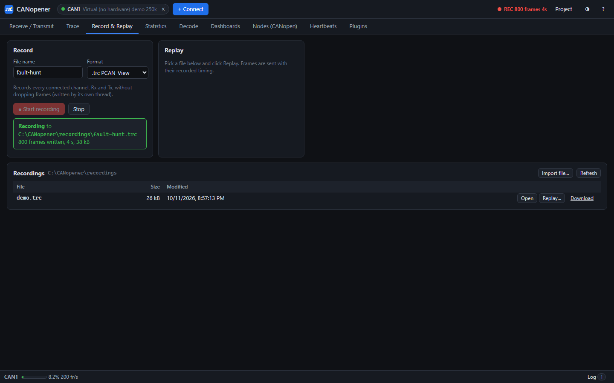
Record
- Optionally type a File name (default: the date and time).
- Choose the Format.
- Click Start recording.
Every channel connected when the recording starts is recorded, received and sent frames, by a writer thread of its own. In the tests it recorded every frame at more than 8 000 frames per second on the virtual bus (about a full 1 Mbit/s bus); it has not yet been measured on a real bus. The card shows the file, the frames written, the duration and the size; the top bar shows REC. Stop finishes the file.
An existing file is never overwritten: -1, -2 ... is added to the name instead.
The formats are written to their published layouts and read back by CANopener in the tests; opening the files in PCAN-View, Vector tools or candump has not been tried yet.
| Format | Use |
|---|---|
.trc |
PCAN-View trace (version 2.1: CAN FD, Rx/Tx, several buses). |
.blf |
Vector binary logging format (CANalyzer, CANoe, ...). |
.asc |
Vector ASCII. |
.log |
Linux candump. |
.csv |
Spreadsheets. |
.canbin |
A compact binary format for loggers on a PLC (classic CAN). |
Recordings
The Recordings card lists the files in the recordings folder (its path is shown next to the title), newest first:
- Open loads the file for offline viewing (see below).
- Replay... sends it onto a bus.
- Download saves a copy where you choose.
- Import file... copies a
.trc,.asc,.blf,.log,.csvor.canbinfile from elsewhere into the recordings folder. Refresh reads the folder again.
Open a recording offline
Open loads the file as a file channel: it shows as a chip named after the file, with the word file.

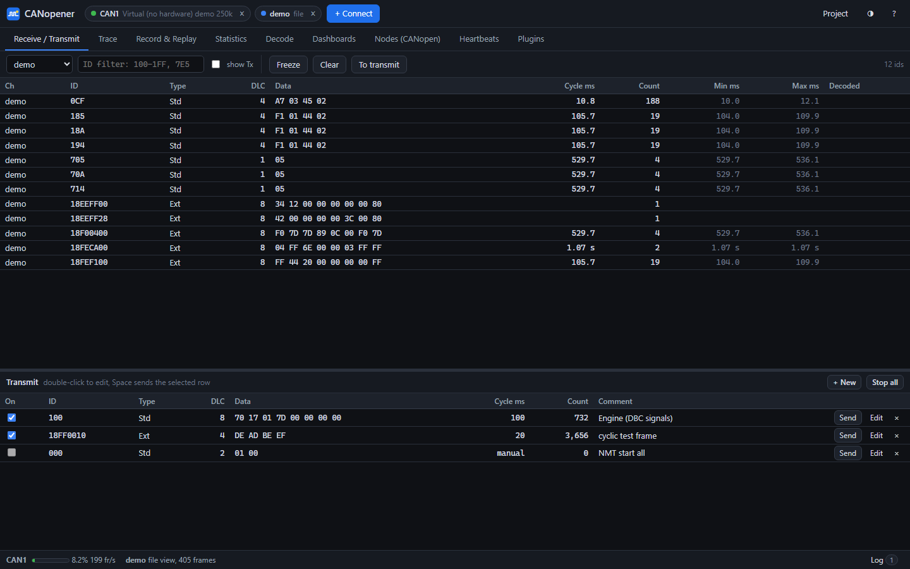
- The receive list shows its IDs with the real cycle times from the recorded timestamps (pick the file in the channel selector to see only it).
- The trace shows its frames, from the start.
- The status bar shows how many frames it holds.
A file channel never transmits and needs no adapter. Close it with the × on its chip.
Replay

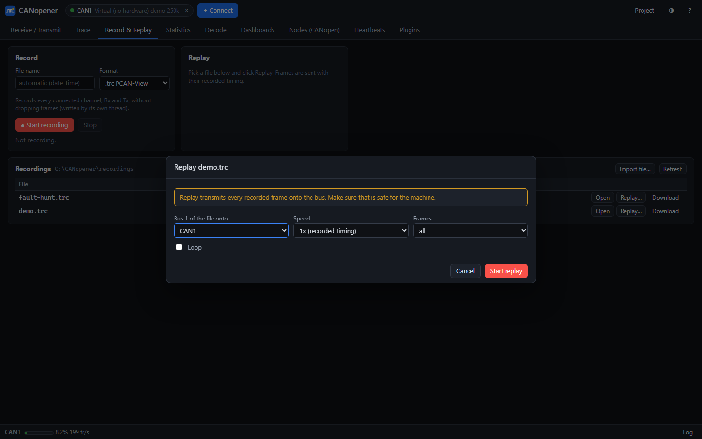
Replay... asks:
- Bus 1 of the file onto: the connected channel to send on;
- Speed: 0.5x, 1x (recorded timing), 2x or 10x;
- Frames: all, recorded Rx only, or recorded Tx only;
- Loop: start over at the end.
Replay transmits every recorded frame onto the bus. Make sure that is safe for the machine. The Replay card shows the progress, with Pause / Resume and Stop.
Statistics

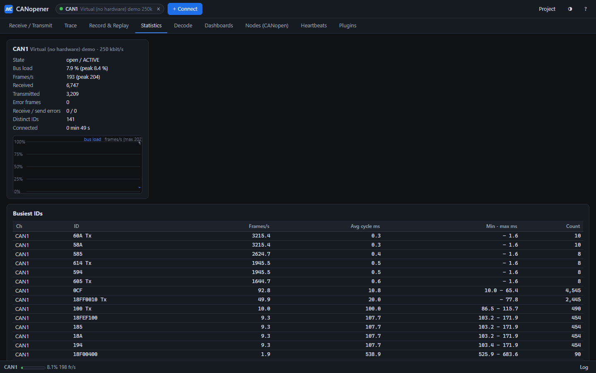
One card per channel:
- State: open, error or file, and the bus state (ACTIVE, warning, passive, bus off).
- Bus load: now and peak, estimated from the frames.
- Frames/s: now and peak.
- Received, Transmitted.
- Error frames (and per second), Receive / send errors, adapter overruns, as far as the driver reports them.
- Distinct IDs, and how long the channel has been Connected.
The chart shows bus load and frame rate over the last 10 minutes.
Busiest IDs ranks the periodic IDs by their average rate over the whole time they were seen: frames per second, average cycle, minimum and maximum interval, count. IDs seen fewer than 5 times (single SDO transfers, NMT commands) are left out.
Nodes (CANopen)
This tab finds the CANopen nodes on a channel and changes their node ID or bit rate. Every change is a plan:
you first see every frame that will be sent, tick a box, and only then is anything sent. Every scan, plan and
run from this tab is written to logs\nodes.log (scans from the command line are not logged; their plans and
runs are).

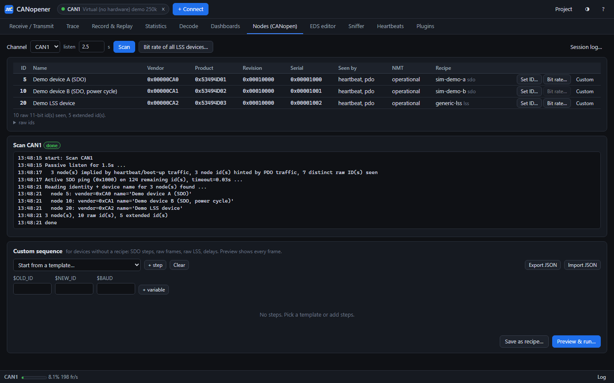
Scan
Choose the Channel, the listen time (default 2.5 s) and click Scan.
- CANopener listens: heartbeats, boot-ups and PDOs hint at node ids.
- It pings every node id it has not already seen (heartbeat, boot-up) with an SDO read of 0x1000 (device type).
- For each node found it reads the identity (0x1018: vendor id, product code, revision, serial number) and the device name (0x1008).
The table shows each node with its name, identity, how it was seen (heartbeat, pdo, sdo), its NMT state, and the recipe CANopener will use to change its node ID and bit rate. Below the table: how many raw 11-bit and extended IDs were seen, and PDO-range traffic that has no CANopen node behind it. raw ids lists them all.
The scan only reads: it changes nothing on any node. On a listen-only channel it only listens: it lists the
nodes it hears heartbeating and reads no identity. PDO-range traffic is then shown as "not asked", because a
node without a heartbeat, or a node whose PDOs use other CAN ids, cannot be told apart from free-form traffic
without asking. The job log
under the table shows each step; Stop cancels a running job. Session log... shows the end of
logs\nodes.log.
Recipes
A recipe says how a device changes its node ID (and bit rate). CANopener picks it by the vendor id from 0x1018 (and the product code, when a recipe names one):
- LSS (CiA 305) is the default for every device without a recipe;
- SDO recipes write the device's own node-id object, store, and reset;
- read-only devices cannot be changed (Set ID... is disabled).
CANopener ships no recipes for real devices, only those of the simulator's demo devices. For your devices, build the sequence in the custom mode and Save as recipe. From then on Set ID... and Bit rate... use it automatically.
Set ID
Set ID... on a node row asks for:
- New node ID (1..127);
- Method: automatic (by vendor id), LSS, or a named recipe;
- Verify timeout s: how long to wait for the node to answer at its new id.
Preview then shows the plan:

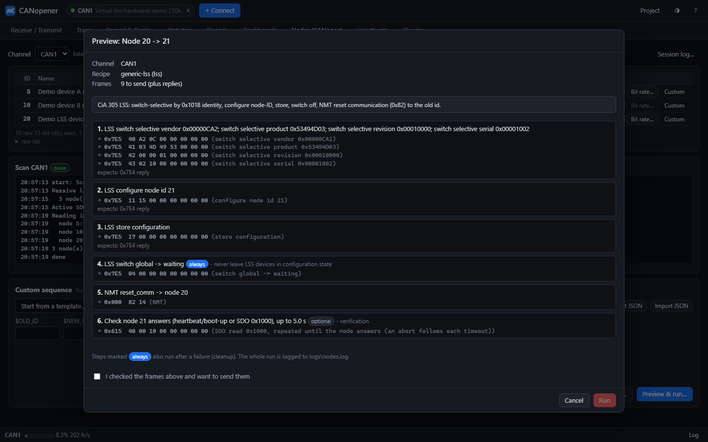
- the channel, the recipe and where it comes from, the number of frames;
- warnings: a conflict when the new id's COB-IDs (heartbeat, SDO, PDOs) are already used by any ID seen on the bus, not only by other CANopen nodes; that a power cycle is needed;
- every step with the exact frames that will be sent, including the conditional ones (the SDO abort after a timeout, the polls of the new id), and the reply each step expects.
Steps marked always also run after a failure (cleanup, for example LSS back to waiting). Steps marked optional only warn when they fail.
Nothing is sent until you tick I checked the frames above and want to send them and click Run. The run
shows live in the job log, the result shows under it (verified at the new id, or "power cycle required"), and
the whole run is appended to logs\nodes.log.
A scan is needed first: the conflict check and the recipe come from it.
Bit rate
Bit rate... on a node row changes that node's bit rate with its recipe (SDO or LSS). Bit rate of all LSS devices... switches every LSS device on the bus at once. The dialog asks for:
- New bit rate (10 to 1000 kbit/s);
- LSS switch delay ms;
- Verify timeout s.
The preview shows the frames as for Set ID. The sequence is configure, store, then activate. After the switch the adapter reopens at the new rate and waits for traffic. Nodes that did not switch stay at the old rate and are no longer heard; the preview warns about this. Bit-rate changes have been tested on the simulator only, not yet on a real device.
The button is disabled for a node whose recipe has no bit-rate method (use the custom mode).
Custom mode for unknown devices
The Custom sequence card builds your own steps, for devices without a recipe, or for anything else you want to send as a checked, logged sequence.

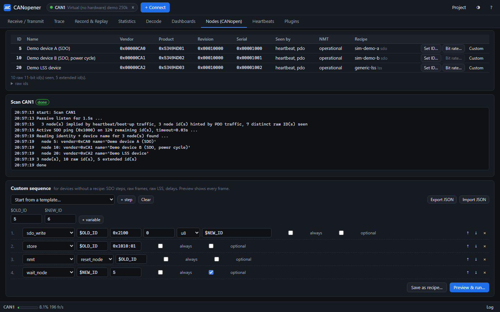
- Start from a template... loads a starting point: SDO node id + store + reset; LSS node id for the only device on the bus; LSS bit rate of every LSS device; read identity and name; NMT start all; NMT all to pre-operational.
- + step adds a step; the arrows move it, × removes it; Clear removes all.
- Variables (
$OLD_ID,$NEW_ID,$BAUD, ...) are filled in above the steps. + variable adds your own. - Custom on a scanned node row puts its id into
$OLD_IDand its identity into$VENDOR,$PRODUCT,$REVISION,$SERIAL. - Preview & run... shows the same exact-frame preview as Set ID.
- Save as recipe... stores the sequence as the recipe for a vendor id (see the walkthrough Commission an unknown device).
- Export JSON / Import JSON share sequences as files.
The editor keeps your steps between sessions.
| Step | What it sends |
|---|---|
sdo_write |
SDO download: node, index, sub, type (u8, u16, u32, i8, i16, i32, u64, i64, f32, str, bytes), value. |
sdo_read |
SDO upload; with an expect value the step fails when the device answers something else. |
store |
Writes 'save' to 0x1010 (sub 1 by default). |
nmt |
start, stop, preop, reset_node, reset_comm, to one node or all (0). |
raw |
Any frame: id, data, 29-bit (ext), FD. |
lss |
switch_global (waiting / configuration), switch_selective (vendor, product, revision, serial), configure_node_id, configure_bit_timing, activate_bit_timing, store, inquire_node_id. |
delay |
A pause in ms. |
reopen |
Reopens the adapter at another bit rate (kbit/s). |
wait_node |
Checks that a node answers (heartbeat, boot-up or SDO), with a timeout. |
wait_traffic |
Checks that any frame arrives, with a timeout. |
Placeholders: $OLD_ID, $NEW_ID, $BAUD (kbit/s), $VENDOR, $PRODUCT, $REVISION, $SERIAL, and your
own variables. Per step, always runs it also after a failure, optional makes a failure only a warning.
Decode: DBC, CANopen, J1939
The Decode tab has three views, DBC, CANopen and J1939. Decoded values appear:
- in the receive list's Decoded column;
- on this tab;
- as signals for dashboards and for Claude.
The decoder setup (DBC files, EDS per node, J1939 channels) is saved with the settings and in projects.
DBC

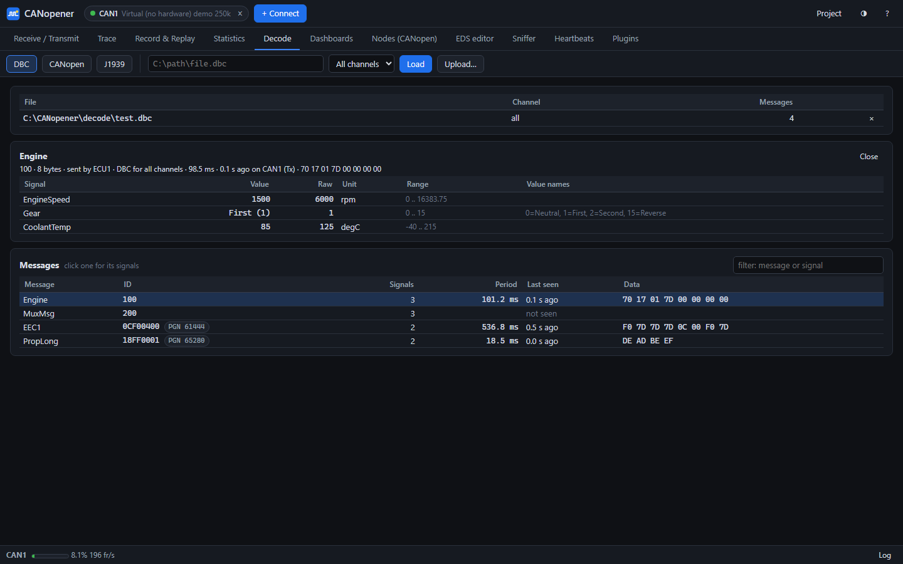
- Give the full path of a
.dbcfile and click Load, or Upload... one. Choose All channels or one channel. Several files can be loaded; × unloads one. - The Signals table lists every message and signal with its live value, unit and range (and the named values). Type into the filter to find a message or signal.
- Multiplexed messages decode (the multiplexer and the signals of the active multiplexer value).
- J1939 messages of a DBC (frame format J1939PG) match by PGN on channels with J1939 on, so every source
address decodes; the value column then shows one value per source address (
SA 0: ...).
With a DBC loaded, the transmit dialog has the DBC message mode: see Decode with a DBC and transmit by signal value.
CANopen

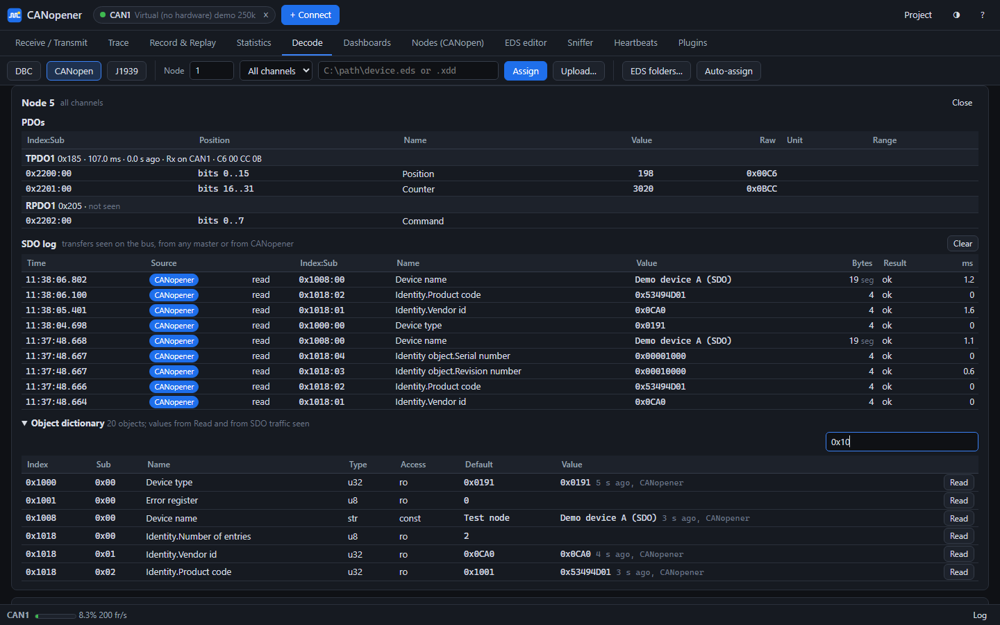
- Set the Node id, the channel, and give the path of an
.eds,.dcfor.xddfile: Assign, or Upload.... - The node table lists the nodes with a file and the nodes seen sending heartbeats (marked "no EDS"), their PDOs and their NMT state from the heartbeats.
- PDOs decode from the file's mapping. Read PDO mapping reads the device's real mapping over SDO (uploads only) and decodes with that instead (marked from device).
- Objects... opens the object dictionary browser: index, sub, name, type, access, default, and the value. Read reads one object from the device. Write... asks for a value and opens the exact-frame preview. The filter finds objects by name or index.
- Start, Stop, Pre-op and Reset send NMT commands to the node, after the same preview.
- The EMCY log decodes emergency messages: the error code with its meaning, the error register bits and the vendor-specific bytes. Clear empties it (and the J1939 transport-protocol list).
Every write (SDO write, NMT) is a plan, as on the Nodes tab: nothing is sent before you have seen the frames and confirmed.
J1939

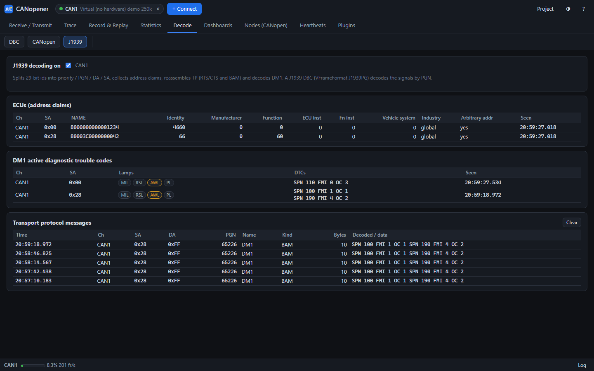
Tick J1939 decoding on for each channel that carries J1939. Then:
- 29-bit IDs split into priority, PGN, destination and source address; the receive list's Decoded column shows the PGN name and addresses.
- ECUs (address claims) lists every address claim with its NAME decoded: identity number, manufacturer code, function, ECU and function instance, vehicle system, industry group, arbitrary address capability.
- DM1 active diagnostic trouble codes shows the lamps (MIL, RSL, AWL, PL; lit when on) and the active DTCs (SPN, FMI, occurrence count) per ECU.
- Transport protocol messages lists messages longer than 8 bytes, reassembled from RTS/CTS and BAM transfers (and aborted ones with the reason), with the decoded content.
Signal names
| Source | Signal key |
|---|---|
| DBC | dbc/<Message>/<Signal> |
| DBC, J1939 message | j1939/<SA>/<PGN>.<Signal> |
| CANopen PDO | canopen/<node>/<PDO>.<variable>, for example canopen/5/TPDO1.Position |
| CANopen NMT state, EMCY | canopen/<node>/NMT, canopen/<node>/EMCY.code, canopen/<node>/EMCY.register |
| J1939 DM1 | j1939/<SA>/DM1.ActiveDTCs (number of active DTCs) |
| Quick signal | raw/<name> |
EDS editor
The EDS editor tab creates, opens, checks and saves CANopen device descriptions: EDS files, and DCF files (an EDS plus the values for one node). It also compares a file with a node on the bus, and builds an EDS for a device that came without one. It comes as a plugin and is part of the release.
Everything that talks to a node (compare, read PDOs, create from a node, write a DCF) has been tested against the simulator and other CANopen SDO servers on the virtual bus, not yet against a real device.

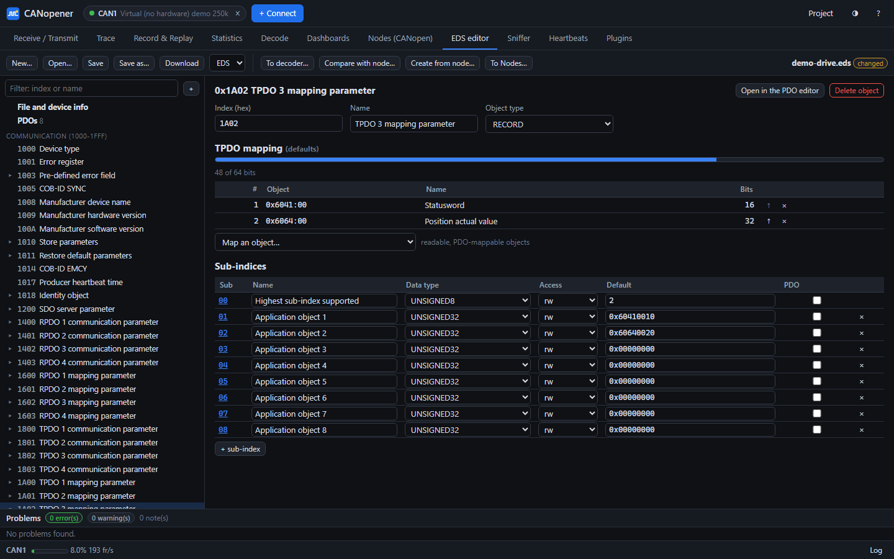
Toolbar:
| Button | Does |
|---|---|
| New | Starts from a template: a CiA 301 device (the communication objects, 4 RPDOs and 4 TPDOs), CiA 401 generic I/O, or a CiA 402 drive, with the usual default PDO mapping. Type the vendor and product. |
| Open | Opens an EDS, DCF or XDD/XDC file: from the list (the eds and decode folders next to canopener.exe), by path, or by upload. XDD files are saved as EDS. |
| Save, Save as | Saves into the eds folder next to canopener.exe, as EDS or DCF. |
| Download | A copy to keep somewhere else. |
| EDS / DCF | DCF shows the value fields (ParameterValue) and the commissioning section (node id, bit rate). |
| To decoder | Saves the file and assigns it to a node in Decode > CANopen. |
| Compare with node | Reads the node (see below). |
| Create from node | Builds an EDS from what a node answers (see below). |
| To Nodes | Turns the DCF values into steps in the Nodes tab (see below). |
Editing. The tree on the left groups the objects: communication (1000-1FFF), manufacturer (2000-5FFF), device profile (6000-9FFF). Type in the filter to find an index or a name. Click an object to edit it on the right: index, name, object type (VAR, ARRAY, RECORD), data type, access, default value, limits and whether it can be mapped into a PDO. For an ARRAY or RECORD the sub-indices are a table; + sub-index adds one and keeps sub-index 0 (the highest sub-index) right. + next to the filter adds an object. File and device info at the top of the tree holds the file and device data, the bit rates and the comments.
Values are typed as in the file: 0, 0x1F, 010 (octal, as CiA 306 says), or $NODEID+0x180 for values that
depend on the node id.
PDO mappings. A mapping object (1600-17FF for RPDOs, 1A00-1BFF for TPDOs) shows its entries and the bits used, and Open in the PDO editor takes you to the PDO editor below.
Problems. The list at the bottom is checked after every change. Click a problem to go to the object. It finds, among others:
- missing mandatory objects (1000, 1001, 1018), unknown data types and access types;
- values that are not valid for their data type or are outside their limits;
- a sub-index 0 that does not match the sub-indices;
- PDO mappings longer than 64 bits, mapped objects that do not exist, are not PDO-mappable, have another size, or have the wrong access (an RPDO needs a writable object);
- two PDOs with the same COB-ID;
- DeviceInfo numbers that differ from the identity object (1018).
What is kept. Keys and sections the editor does not know (vendor tool settings, ObjFlags and so on) are
written back unchanged, so fixing one value in a vendor's EDS does not lose the rest. Objects written in the
compact form (CompactSubObj) are written out as normal sub-indices.
PDO editor
PDOs at the top of the tree lists every RPDO and TPDO of the file, decoded: COB-ID, on or off, transmission type, bits mapped and the mapped objects. Click one to edit it. In a DCF the editor shows and changes the DCF values; in an EDS, the defaults.

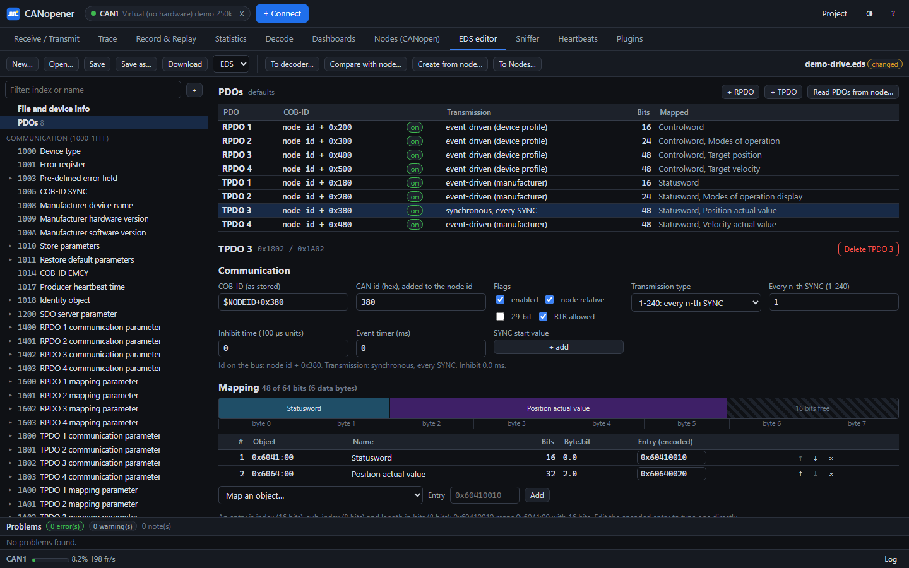
Communication (object 1400+ for RPDOs, 1800+ for TPDOs):
- COB-ID as stored, for example
$NODEID+0x180, and decoded: the CAN id, and the flags enabled (bit 31 clear), node relative (the CAN id is added to the node id), 29-bit (bit 29) and RTR allowed (bit 30 clear). Change either side: the flags rewrite the stored value, and a typed value updates the flags. With a node id in the DCF commissioning section, the id on the bus is shown for that node, and node relative rewrites the same id with or without the node id (without a node id it asks you to type the COB-ID). An 11-bit id stops at 7FF; tick 29-bit for longer ones. A PDO with CAN id 0 cannot be enabled. - Transmission type in words: 0 synchronous acyclic, 1-240 every n-th SYNC, 252/253 RTR only (TPDOs), 254/255 event-driven.
- For TPDOs inhibit time (in 100 µs units, also shown in ms) and SYNC start value; for both the event timer (ms; for an RPDO the deadline). A parameter the object does not have shows + add: adding it changes the device description (the file then says the device has it), so the editor asks first.
Mapping (object 1600+ / 1A00+): the frame layout shows which bits of the 8 data bytes each mapped object
fills, and the free bits. Each entry is listed decoded (object, name, bits, byte.bit where it starts) and encoded,
as stored in the object dictionary: index (16 bits), sub-index (8) and length in bits (8), so 0x60410010 maps
0x6041:00 with 16 bits.
- Map an object lists the PDO-mappable objects with the right access (readable for a TPDO, writable for an RPDO).
- Gap (dummy), for RPDOs, leaves bits unused (dummy objects 0001-0007); the file's
[DummyUsage]is set to allow it. - Type an encoded entry (Entry, or edit one in the list) to map something directly; the list decodes it.
- ↑ ↓ reorder, × removes. The editor keeps the entries and the count (sub-index 0) in step.
+ RPDO and + TPDO add the next free PDO (communication and mapping object). PDOs 1-4 get the predefined
COB-IDs ($NODEID+0x180 and so on); later ones start disabled until you give them a COB-ID. Delete removes
both objects. Read PDOs from node reads the PDO objects that are in the file from a node (SDO reads only)
and offers to store what the node has as DCF values or defaults, so you see the mapping the node really uses. To
find PDOs the file does not have, use Create from node with the range 1400-1BFF.
The problem list also catches CAN ids that CiA 301 keeps for other services (NMT, SYNC, EMCY, TIME, SDO, heartbeat, LSS) and ids above 7FF for some node id.
Compare with a node, read its values
Compare with node reads every readable object of the file from a node and lists, per object, the file's value, the node's value and the status: same, differs, missing (the node does not have it), size (the node sends another length), read (the file has no value to compare with) or error. Untick only differences to see everything. Objects that change by themselves (status words, actual values, the serial number 0x1018:04) differ even on a well configured node. When the node stops answering or you press Stop, what was read so far is kept.

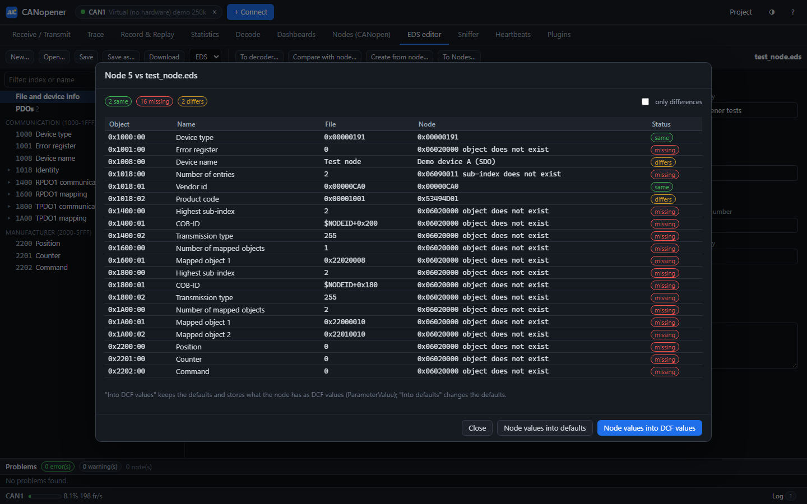
- Node values into DCF values stores what the node has as DCF values and switches the file to DCF. Save it as the record of how that node is configured.
- Node values into defaults makes the node's values the file's defaults.
Create an EDS from a node
Create from node asks the node for every index (1000-9FFF, or the hex ranges you type, such as
1000-1FFF, 2000-20FF). On a real node the whole range can take minutes (not yet measured); there is a progress bar and Stop. Standard
objects get their CiA names, data types and access. For the others the data type is guessed from the reply size
and the access is unknown (CANopener only reads), and each guess is listed under Problems: check them against the
device's manual. COB-IDs that follow the node id become $NODEID+..., so the EDS fits any node id. Stop, or a
node that stops answering, keeps the objects found so far. A node that answers every index with an error (so
missing objects cannot be told apart) is noticed, and that range is left out.
Write a DCF to a node
The editor never writes to a node. To Nodes turns the DCF values into steps in the Nodes tab's custom sequence editor:
- NMT pre-operational first (PDOs can only be changed there), then the SDO writes, then a store (0x1010:01 "save"); each of these can be switched off, and a reset can be added;
- by default only values that differ from the default;
- a changed PDO is written the CiA 301 way: disabled (COB-ID bit 31), mapping count 0, the entries, the count, the other parameters, then enabled again. This writes the whole PDO (its COB-ID and all mapping entries, from the file's values) even when only one parameter changed. A PDO that cannot be disabled (its COB-ID is not writable) keeps its mapping;
- the COB-IDs of SYNC, TIME, EMCY and SDO channels are switched off before their id changes;
- values of read-only objects, and values that cannot be read as a number of their type, are skipped and listed. A number outside its type's range (for example 70000 for an UNSIGNED16) is not skipped: it shows as an error under Problems, so fix it before writing. Without 0x1010:01 in the file there is no store.
Then use Preview & run in the Nodes tab, which shows every frame and asks before sending. The node stays in pre-operational (no NMT start), unless you tick the reset.
Device work only sends SDO reads. It runs as a node job: it shows in the Nodes tab, it cannot start while another
node job runs, and it is logged in logs\nodes.log.
Sniffer
The Sniffer tab helps you find what the bytes of unknown frames mean, when there is no DBC or EDS: it shows which bits change, and when. It only reads frames; it never sends anything, and your own frames (Tx) are left out. It comes as a plugin and starts analysing the first time you open the tab.

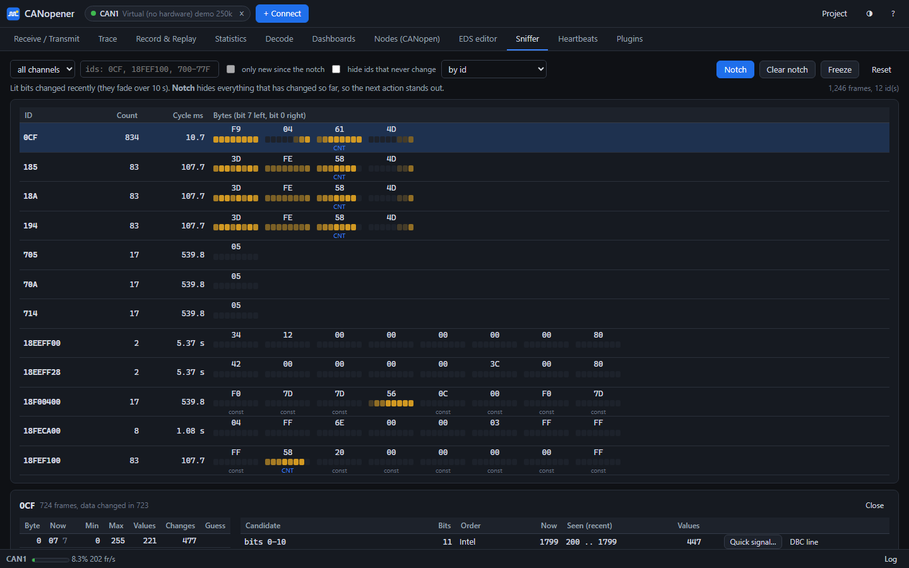
The grid. One row per id: the count, the cycle time and every byte, in hex and as its 8 bits (bit 7 left, bit
0 right). A bit lights up when it changes and fades over about 10 seconds, so counters flicker all the time,
constant bits stay dark and a signal lights up when it moves. Filter by channel and id (0CF, 18FEF100, 700-77F),
hide ids that never change, and sort by id, by the most recent change or by count. Freeze stops the view
(the analysis goes on); Reset forgets everything seen so far.
Notch. Let the sniffer watch the traffic for a few seconds first (a notch in the first seconds is refused, because everything after it would look new). Press Notch to hide every bit that has changed so far (they are shown hatched). Then do one thing on the machine: press a pedal, flip a switch, move a joystick. The bits that change after the notch get a blue outline. Only new since the notch shows only the ids with such bits, plus ids seen for the first time after the notch (marked new id; slow or event frames show up here too). Clear notch shows everything again.
Guesses per byte, under each byte:
| Mark | Means |
|---|---|
| CNT | a counter: the byte changes in almost every frame, by the same step |
| CNT4 | a 4-bit counter in the low nibble (the high nibble does not move) |
| CHK | a checksum: the XOR, or the sum plus a constant, of the other bytes |
| const | never changed |
Bytes guessed as counters or checksums never count as new after a notch, because they change all the time anyway; a wrong guess can therefore hide a real signal. Only XOR and sum checksums are recognised (not CRCs). The guesses come from the frames seen so far and are updated every second, so give them a few seconds of traffic, and check them.
Details and candidates. Click a row for its details: per byte the value now, the lowest and highest value seen, how many different values and changes, and the guess. Candidates are the bit ranges that changed (after the notch, if there is one; bytes guessed as counters or checksums left out): each run of changed bits in Intel and in Motorola bit order, and each group of neighbouring changed bytes byte-aligned in both byte orders, at most 64 bits each. Each shows the raw value now and the lowest and highest value of its recent changes (the last 1000 frames of that id in which such bits changed).
- Quick signal makes it a quick signal (name, bits, byte order, signed, factor, offset, unit), so you can plot it on a dashboard right away.
- DBC line gives the
BO_/SG_lines to paste into a DBC file (fix the name, scaling, unit and range).
Claude gets get_sniffer_changes (what changed, with guesses and candidates; read only) and set_sniffer_notch
(which only changes the sniffer's view, and is refused in the first seconds). So you can ask Claude to notch, do
the action, and then ask which bits moved.
The sniffer has been tried on the simulator and on made-up frames in the tests, not yet on a real machine.
Dashboards

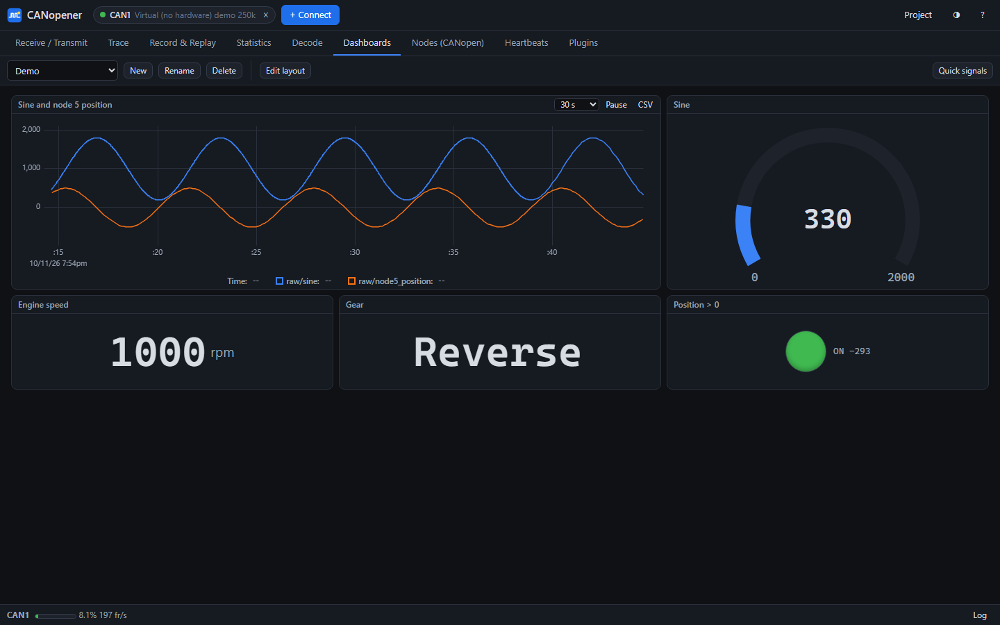
The Dashboards tab holds any number of named dashboards. Pick one in the list; New, Rename and Delete manage them.
| Widget | Shows |
|---|---|
| Time plot | One or more signals over 10 s to 10 min. Pause freezes it; drag across the plot to zoom, double-click to zoom out; CSV saves the plotted values. |
| XY plot | One signal against another over a time window. |
| Gauge | A value on a dial with min, max, unit, number format and coloured threshold bands. |
| Numeric tile | A value with unit and format (auto, 0, 0.0, 0.00, 0.000, hex) and threshold colours. Named values show as text. |
| Bit lamp | On or off: when the value is not 0, when one bit is set, or when the value is at or above a threshold; with on and off colours. |
Edit the layout
Click Edit layout. The button becomes Done, and + Widget appears.

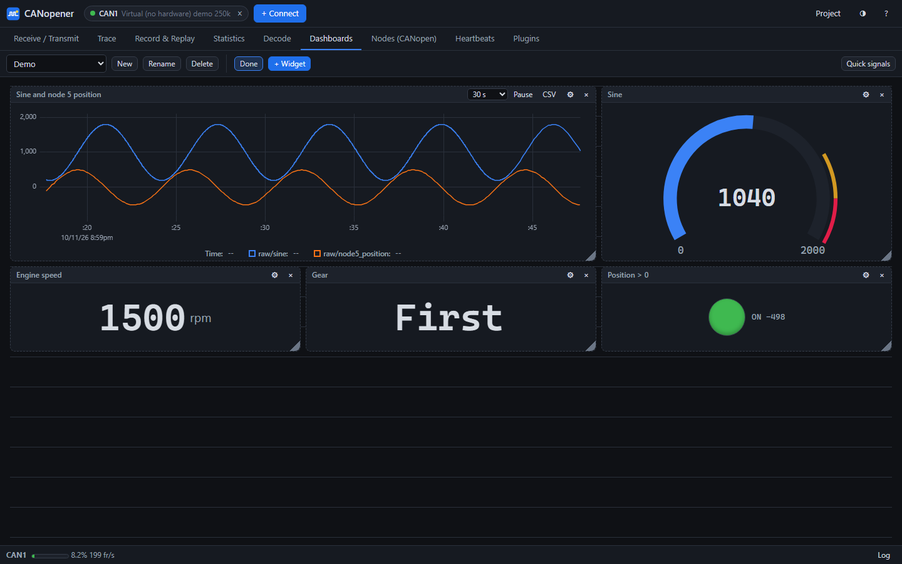
- + Widget asks for the widget type, then its settings.
- Drag a widget by its title bar to move it; drag its bottom-right corner to resize. Widgets snap to a 12-column grid and never overlap.
- ⚙ opens a widget's settings, × removes it.

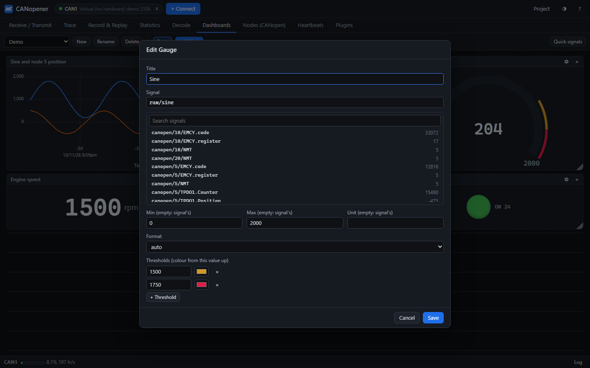
In the settings, Search signals lists every signal that is being published right now, with its current value. Click one to use it (for a time plot: to add it). You can also type a key. Gauges and tiles take min, max and unit from the signal when you leave them empty.
Changes are saved as you make them.
Quick signals (without a DBC)
Quick signals defines signals on raw frames, for when there is no DBC file.

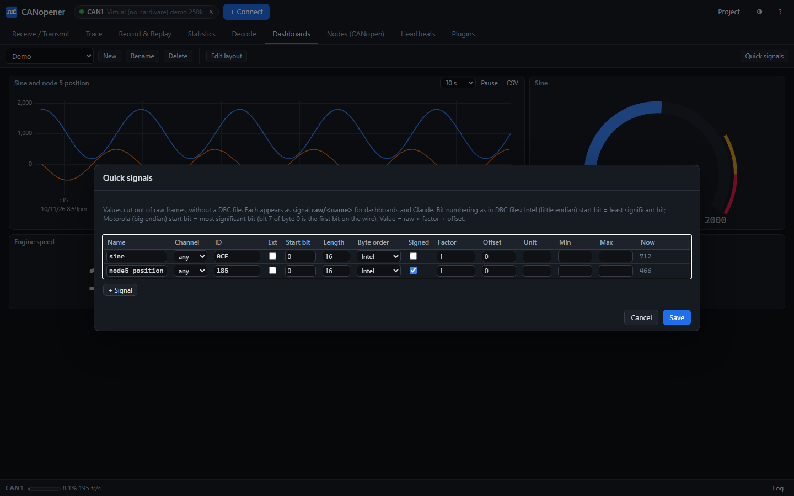
Per signal: Name, Channel (any or one), ID (hex; Ext for 29-bit, set automatically above
7FF), Start bit, Length, Byte order (Intel or Motorola), Signed, Factor, Offset,
Unit, Min, Max. The Now column shows the value decoded from the latest frame while you type.
Save publishes them as raw/<name>.
Bit numbering is as in DBC files: for Intel (little endian) the start bit is the least significant bit; for Motorola (big endian) it is the most significant bit, and bit 7 of byte 0 is the first bit on the wire. Value = raw × factor + offset.
Dashboards and quick signals are saved with the settings and in projects. Dashboards look the same in the light theme:

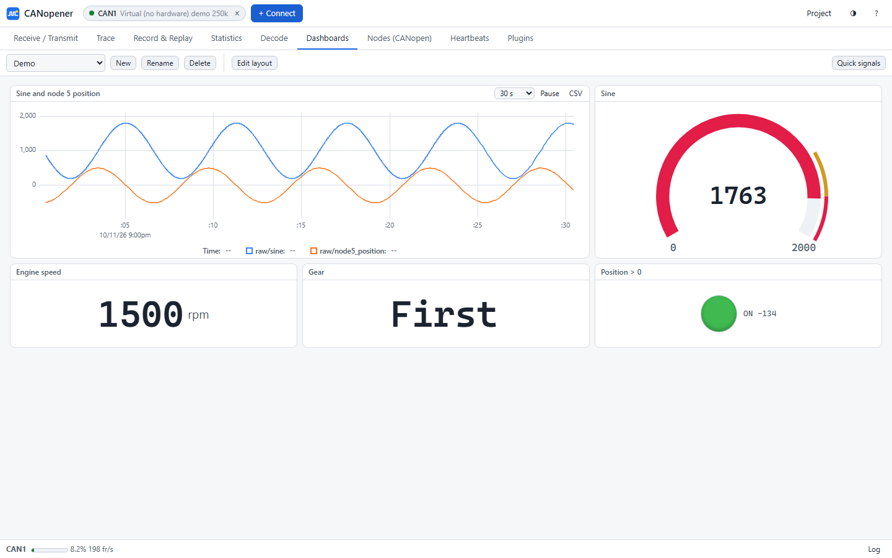
Projects and settings

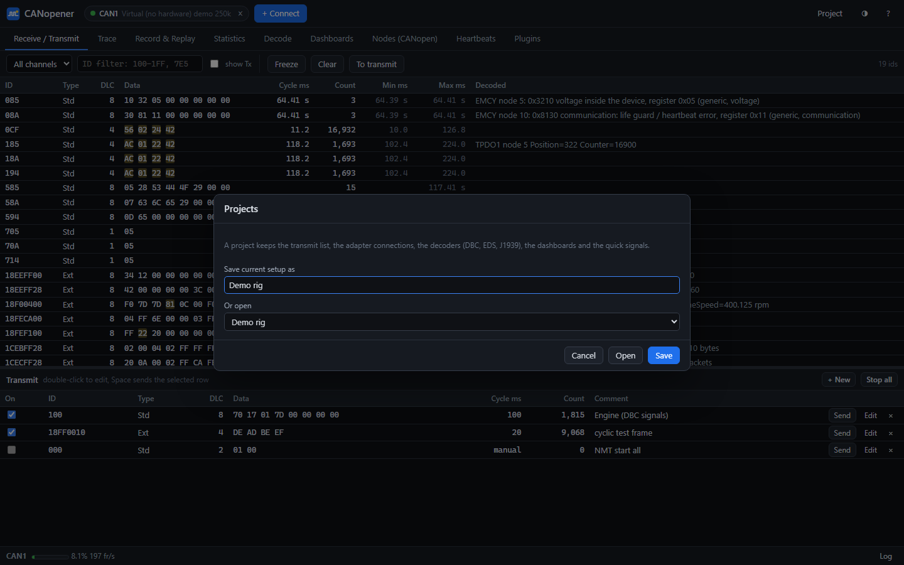
Project in the top bar saves or opens a whole setup under a name. A project keeps:
- the transmit list;
- the adapter settings of the connected channels;
- the decoder setup (DBC files, EDS per node, J1939 channels);
- the dashboards and quick signals.
Save stores the current setup under the name you type. Open loads a saved project: cyclic transmits stop, the transmit list, decoders and dashboards are replaced, and if no adapter is connected CANopener asks whether to connect the project's adapters.
Without projects, CANopener remembers anyway (in settings.json): the last connection of each channel (the
Connect dialog is filled in with it), the transmit list, the decoder setup, dashboards and quick signals.
Adapters are never connected automatically at start.
View preferences (theme, last tab, sort order, the receive / transmit split, the trace filter, the custom sequence editor) are kept per PC in the window's own storage.
Task walkthroughs
Watch a bus and find which ID floods it
- Connect the adapter with Listen-only ticked (see Listen-only).
- Look at the status bar: bus load and frames per second. The load bar changes colour above 50 % and turns red above 80 %.
- Open Statistics. Busiest IDs ranks the periodic IDs by frames per second; the top rows are what loads the bus. Min - max ms shows whether an ID is regular or bursty.
- On Receive / Transmit, click the Count header (twice for highest first) or Cycle ms. Type the suspect ID into the ID filter to watch only it.
- To see the order of frames around a burst, open Trace, type the busy IDs into IDs and tick exclude to hide them, or leave exclude off to see only them. Delta (ms) shows the gaps.
Error frames and bus state warnings show in the status bar and on the Statistics card. Many error frames with little traffic often mean a wrong bit rate or missing termination.
Send a cyclic frame
- Connect (not listen-only).
- Under Transmit, click + New.
- Type the ID (hex), the Data (hex bytes) and a Cycle time ms (for example 100).
- Click Add.
- Tick On in the new row. Count starts counting.
Untick On to stop it; Stop all stops every cyclic entry. To send a frame once, set the cycle time to 0 and click Send (or select the row and press Space). To copy a frame you see on the bus, select it in the receive list and click To transmit.
Record a fault and send the file to a colleague
- Connect the channels you need (listen-only is fine).
- On Record & Replay, type a File name, for example
fault-hunt, and choose the format your colleague uses:.trc(PCAN-View),.blfor.asc(Vector tools),.log(candump),.csvfor a spreadsheet. Opening them in those programs has not been tried yet. - Click Start recording before the fault happens. The top bar shows REC with the frame count.
- When the fault has happened, click Stop.
- In Recordings, click Download on the file to save a copy where you want, or take it from the
recordingsfolder next tocanopener.exeand attach it to an e-mail.
Missed the start? Trace > Save... writes what the trace buffer still holds (about 260 000 frames per channel; how long that covers depends on the bus load) to a file.
Open a recording offline
- If the file is not in the recordings folder yet, click Import file... in Recordings and pick it.
- Click Open on the file. No adapter is needed.
- The receive list shows the file's IDs with their recorded cycle times; choose the file channel in the channel selector to see only it. The trace shows the frames from the start.
- Close the file with the × on its chip.
To play the file onto a real bus instead, use Replay....
Give a CANopen node a new ID
With the simulator you can try both ways safely: demo device A has an SDO recipe, the demo LSS device uses LSS.
With an SDO recipe (a device CANopener has a recipe for):
-
On Nodes (CANopen), click Scan.
-
On the node's row (for example node 5, recipe
sim-demo-a), click Set ID.... -
Type the New node ID (for example 6) and click Preview.
-
Read the frames: the SDO write of the node-id object, the store to 0x1010:01, the NMT reset, and the check that node 6 answers.
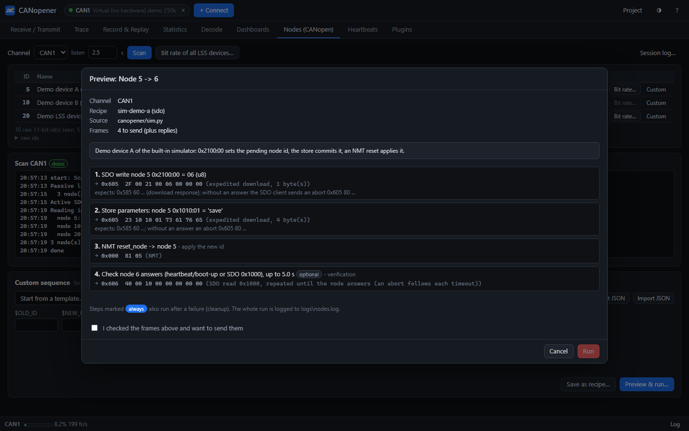
Set-ID preview of demo device A: SDO write, store, NMT reset, verify -
Tick I checked the frames above and want to send them and click Run.
-
The job log shows each step; the result says whether the node answered at its new id. Scan again to see it in the table.

If the device needs a power cycle (demo device B), the preview warns, and the result says "power cycle required". Switch the device off and on, then scan. (In the simulator, demo device B applies its new id at the next NMT reset instead: Decode > CANopen > Reset on node 10.)
With LSS (CiA 305):
- Scan, then Set ID... on the node (for example node 20, recipe
generic-lss). - The preview selects the device by its identity (switch selective: vendor, product, revision, serial), so only this device is configured even when several LSS devices share the bus (tested on the simulator, not yet on real devices). Then configure node id, store, switch every device back to waiting (an always step), NMT reset communication, and the check of the new id.
- Tick the box and Run.
For a single LSS device whose identity you do not know (it may not even have a valid node id), use the custom sequence template LSS: give the only device on the bus a node id. It uses switch global, so connect only that one device.
Change bit rates
The whole bus has to move together. Plan it so you do not lose contact with devices halfway:
- Scan, so CANopener knows the devices and their recipes.
- For every LSS device at once: Bit rate of all LSS devices..., choose the new rate, Preview, check, Run. The devices should store the new rate and switch after the switch delay; the adapter reopens at the new rate and waits for traffic. This has been tested on the simulator only.
- For a device with an SDO bit-rate recipe (demo device A): Bit rate... on its row. A device that only switches after a power cycle (the preview says so) is reached again after you power it and reconnect at the new rate.
- Afterwards, check the chip in the top bar shows the new rate, and Scan again.
Devices without LSS or a recipe stay at the old rate and are no longer heard; the preview warns about this.
Change those first (with their own tool or a custom sequence ending in a reopen step), and LSS devices last.
Commission an unknown device and save a recipe
For a device CANopener has no recipe for. You need to know, from the device's manual or EDS, which object holds its node id (and whether it needs a store and a reset).
-
Scan. The device shows with recipe
generic-lss. If it does not support LSS, Set ID would fail. -
Click Custom on its row:
$OLD_IDand the identity variables are filled in. -
Start from a template... > SDO: write node id, store, reset.
-
In the first step (
sdo_write), set the index, sub and type of the device's node-id object. Leave the value as$NEW_ID. -
Type the new id into
$NEW_ID. -
Preview & run..., check every frame, tick, Run. The result table shows each step's status.
-
When it worked, click Save as recipe...:
- Vendor id (hex): filled in from the scan;
- Name: a short name;
- Used for: changing the node ID (or the bit rate);
- New id takes effect: immediately / after the reset in the steps, or after a power cycle;
- Note: where the mechanism comes from (manual section, EDS, a trace).
Keep
$OLD_ID,$NEW_IDand$BAUDin the steps: the recipe fills them in each time. -
From now on, Set ID... (and Bit rate..., for a bit-rate recipe) picks your recipe for every device with that vendor id. It is stored in
recipes\user-recipes.json.
Export JSON saves the sequence to share it; a colleague loads it with Import JSON and saves it as a recipe on their PC.
Decode with a DBC and transmit by signal value
- On Decode > DBC, give the path of the
.dbcfile and click Load (or Upload...). - The Signals table shows live values. The receive list's Decoded column shows the decoded messages (tick show Tx to see your own frames decoded too).
- To send by signal value: + New under Transmit. In Data from, choose DBC message ....
- Type the signal values (lists for named values). The ID comes from the DBC; the bytes are encoded when you click Add and show in the transmit row.
- Set a cycle time if wanted, Add, and tick On.
To change a value while it is sending, click Edit, change the signal, Save.
CANopen EDS: PDOs, SDO browser, NMT, EMCY
- On Decode > CANopen, type the Node id, give the path of the device's
.eds(or.dcf,.xdd) and click Assign. - The node's PDOs decode from the file: values appear in the receive list's Decoded column (for example
TPDO1 node 5 Position=485 Counter=2290) and ascanopen/<node>/...signals for dashboards. - If the device's mapping differs from the file's defaults, click Read PDO mapping: the real mapping is read over SDO and used instead.
- Objects... opens the object dictionary. Read shows the value in the device. Write... asks for a value, then shows the SDO frames to confirm.
- Start, Stop, Pre-op, Reset: NMT commands for the node, after the preview.
- Emergencies of known nodes appear in the EMCY log, decoded.
J1939: ECUs, DM1, transport messages
- Connect at the bus rate (often 250 or 500 kbit/s), listen-only on a running vehicle.
- On Decode > J1939, tick the channel.
- ECUs fills as ECUs claim addresses. Address claims are sent at power-up and on request, so switch the ignition on after connecting, or wait.
- DM1 shows the active trouble codes and lamps of every ECU that sends them, single-frame and multi-packet (BAM) alike.
- Transport protocol messages shows every reassembled long message.
- Load a J1939 DBC on the DBC view to decode signals by PGN for every source address.
Make an EDS for a device that came without one
- Connect, then Nodes > Scan to see the node id.
- EDS editor > Create from node: the channel, the node id, and leave the ranges empty for the full scan.
- Go through the warnings under Problems: fix the guessed data types and access types with the manual, and give the manufacturer objects names.
- File and device info: vendor name, product name.
- Save, then To decoder to decode the node with it.
Configure a node from a DCF
- Open the device's EDS, then switch the format to DCF.
- Type the values the node needs into DCF value (or set up one node by hand, then Compare with node and Node values into DCF values).
- Save as
node12.dcf, the record of that node's setup. - To Nodes: the node id; keep pre-operational and store ticked.
- In the Nodes tab, check the steps, Preview & run, read the frames and run them.
- Compare with node again: the values you wrote should be "same" (status words, actual values and the serial number differ by nature).
- Start the node (NMT start), for example from the Nodes tab custom mode (template "NMT: start all nodes").
Find which bits a pedal changes
This is how the sniffer is meant to be used; it has not been tried on a real machine yet.
- Connect to the machine (listen-only is enough) and open Sniffer. Wait a few seconds, so counters and XOR or sum checksums get their marks.
- Leave the pedal alone and press Notch.
- Press the pedal slowly, all the way, and let it go.
- Tick only new since the notch. Look for ids with blue-outlined bits: those followed the pedal (ids marked new id only appeared after the notch).
- Click the id. Under Candidates, the range that covers the outlined bits should show a value that follows the pedal, and a seen range from released to fully pressed; try the Motorola and byte-aligned variants if the numbers jump.
- Quick signal, give it a name, then plot
raw/<name>on a dashboard and press the pedal again to check it.
Build a dashboard
- Dashboards > New, type a name. The new dashboard opens in edit mode.
- + Widget > for example Time plot. Click signals in the picker to add them, choose the time window, Add.
- Add a Gauge or Numeric tile for a single value, a Bit lamp for a status bit.
- Move and resize the widgets, then click Done.
No DBC for the frame you want to watch? Use Quick signals:
- Click Quick signals, + Signal.
- Name it, type the ID, the Start bit and Length, byte order and sign, and factor / offset if needed. Watch the Now column: it decodes the latest frame as you type, so you can find the right bits by trial.
- Save. The signal appears as
raw/<name>in the widget picker.
Save and reuse a setup with projects
- Connect the adapters, fill the transmit list, load the decoders, build the dashboards.
- Project > type a name > Save.
- Later, or on another day: Project > pick it in Or open > Open. CANopener offers to connect the project's adapters.
Project files are in the projects folder; copy one to a colleague's projects folder to share the setup.
Claude (MCP)
While CANopener runs, it serves an MCP endpoint at http://127.0.0.1:8775/mcp/ (the address is also shown in
the About box). Add it to Claude Code once:
claude mcp add --transport http canopener http://127.0.0.1:8775/mcp/
Claude then works on the same bus session as your window: it sees what you see, and you see what it does. Channels are numbered from 0 for Claude (channel 0 is CAN1 in the window).
What Claude can do without asking. The read tools only read. Their names start with get_, list_,
read_ or scan_, so you can allowlist them in Claude Code:
get_about,get_status,list_devices,get_bus_stats;get_receive_table,get_trace,get_signals,get_signal_history,get_decoded_frames;list_recordings,read_recording;scan_nodes,get_node_scan,get_node_job,list_recipes;- the previews:
get_set_node_id_preview,get_baud_preview,get_sequence_preview,get_sdo_write_preview,get_nmt_preview(they return frames, they send nothing); get_decode_config,list_dbc_messages,get_canopen_state,list_object_dictionary,read_sdo,get_j1939_state;list_dashboards,get_dashboard;- plugin read tools:
get_heartbeat_nodes(heartbeat monitor),get_eds_problems,list_eds_objects,get_eds_pdos(the PDOs of a file, decoded) andread_node_vs_eds(EDS editor),get_sniffer_changes(sniffer).
scan_nodes, read_sdo and read_node_vs_eds do send frames (SDO reads, and a listen period), but they change
nothing on a node.
What stays on approval. Every other tool has another verb and transmits, records, replays, loads files or
changes a node: connect_channel, disconnect_channel, send_frame, add_transmit_entry,
set_transmit_entry, stop_all_transmit, start_recording, stop_recording, start_replay, stop_replay,
open_recording_view, load_dbc_file, assign_eds_file, set_j1939_decoding, load_pdo_mapping_from_device,
save_dashboard, delete_dashboard, save_user_recipe, create_eds_from_node (probes a node and saves an
EDS), set_sniffer_notch (changes only the sniffer's view) and run_node_plan. Keep these on approval, so Claude
Code asks you for each call.
Node changes take two steps. Claude first calls a preview tool (get_set_node_id_preview,
get_baud_preview, get_sequence_preview, get_sdo_write_preview or get_nmt_preview). It returns the exact
frames and a token, and Claude shows you the frames. Then it calls run_node_plan(token, title), which runs
that plan unchanged. The title must be the preview's title, for example Node 5 -> 6, so the approval prompt
says what will run. The run is logged in logs\nodes.log as done by Claude.
Things to ask, for example:
- "What is on the bus? Which IDs are busiest?"
- "Scan for CANopen nodes and tell me what you find."
- "Show me the frames to change node 5 to node 6." (and, after reading them, "Run it.")
- "Decode the last DM1 of every ECU."
- "Open fault-hunt.trc and find when 0x185 stopped."
Plugins
A plugin is a folder with a manifest.json and a Python module. It can add:
- tabs to the window;
- REST routes;
- MCP tools for Claude;
- live frame consumers; the receive threads never wait for them.
To install one, put its folder into the plugins folder next to canopener.exe and restart CANopener. The
Plugins tab lists what loaded, from which folder, and what failed (with the error). A broken plugin never
stops CANopener.

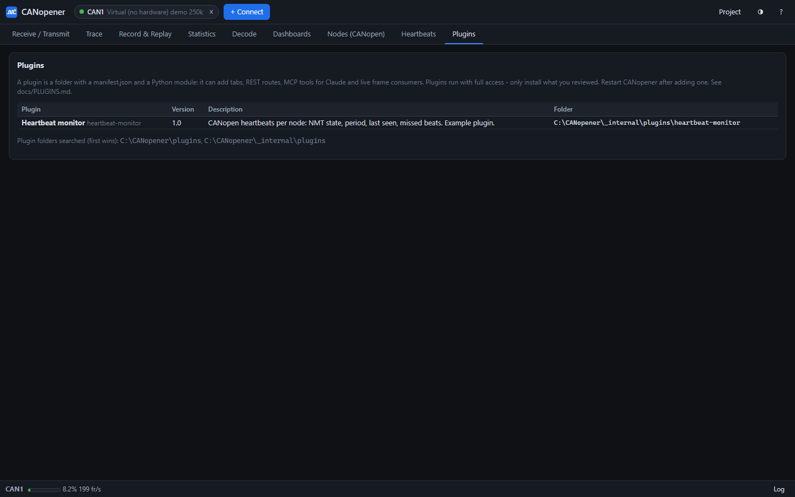
Three plugins ship with CANopener:
- the EDS editor;
- the Sniffer;
- a CANopen heartbeat monitor, a small example to start from: the Heartbeats tab shows, per node, the NMT
state, the heartbeat period, when it was last seen, the count and the boot-ups, and Claude gets
get_heartbeat_nodes.
Plugins run with full access to your PC and the bus: install only what you have reviewed. To write one, see Writing plugins.
Command line
canopener-cli.exe (next to canopener.exe) runs the same program with a console. canopener-cli.exe --help
lists the commands, canopener-cli.exe <command> --help the options.
| Command | Does |
|---|---|
app |
The app window (the default when started without a command). --port. |
serve |
The server only; open http://127.0.0.1:8775/ in a browser. --port, --host. Ctrl+C stops it. |
devices |
Lists the adapters that are plugged in. --json. |
scan |
Scans a CANopen bus and lists the nodes. --seconds, --sdo-timeout, --json. |
set |
Changes a node's node id: --from, --to, --method (lss, readonly, sdo:<name>), --verify-timeout, --recipes. |
baud |
Changes the bit rate: --to (kbit/s), --node (one node) or --global (every LSS device, the default), --switch-delay-ms. |
record |
Captures for --seconds to --out; the extension picks the format. --listen-only. |
trace |
Captures to .trc (or .canbin with --canbin); trace convert in.canbin out.trc. |
replay |
Plays a recorded file onto the bus: --speed, --only (all, rx, tx). |
convert |
Converts between recording formats, by extension. |
The bus commands take --interface (pcan, kvaser, slcan, gs_usb, vector, ixxat, socketcan, virtual; default
virtual), --channel, --bitrate (bit/s, default 250000), --fd, --data-bitrate, and -v to print every
step and frame. The command line does not start the simulator: without --interface, a scan finds an empty
virtual bus.
canopener-cli.exe devices
canopener-cli.exe scan --interface kvaser --channel 0 --bitrate 250000
canopener-cli.exe set --interface pcan --from 1 --to 72
canopener-cli.exe baud --interface pcan --to 500 --node 72
canopener-cli.exe record --interface pcan --seconds 60 --out capture.blf --listen-only
canopener-cli.exe replay --interface pcan capture.blf --speed 1
canopener-cli.exe convert capture.canbin capture.trc
canopener-cli.exe serve --port 8775
set (and baud --node) scan first. set and baud print the same exact-frame plan as the window and ask Send this? [y/N] before
sending anything. --yes skips the question (for scripts).
serve --host 0.0.0.0 makes CANopener reachable from other PCs. There is no login: anyone who can reach the
port can use the bus. Only do this on a network you trust.
Files and folders
Everything sits next to canopener.exe (from source: in the repository folder):
| Folder / file | Contents |
|---|---|
recordings\ |
Recordings, trace saves and imported files. |
logs\canopener.log |
The app log. |
logs\nodes.log |
Node scans from the window, and every plan and run, with the frames. |
projects\ |
Saved projects (one .json each). |
settings.json |
Last connections, transmit list, decoder setup, dashboards, quick signals. |
recipes\user-recipes.json |
Recipes saved from the custom mode. |
eds\ |
Files saved by the EDS editor. |
decode\ |
DBC and EDS files uploaded in Decode. |
plugins\ |
Your plugins. |
docs\user-guide.html |
This guide (open it by double-click; the About box opens it too). |
README.txt |
A one-page summary. |
To move CANopener to another PC, copy the whole folder. To start fresh, delete settings.json.
Environment variables for special setups: CANOPENER_HOME puts the app folder elsewhere,
CANOPENER_PLUGIN_DIRS adds plugin folders (separated by ;), CANOPENER_USER_RECIPES points to another user
recipes file.
Troubleshooting
Nothing happens on double-click. Run canopener-cli.exe app in a command prompt to see the message, and
read logs\canopener.log.
"Port 8775 is in use by another program". Another program uses CANopener's port. Close it, or start
CANopener on another port: canopener-cli.exe app --port 8776 (the MCP address then changes too).
Windows protected your PC. See Download and start: More info, Run anyway.
An adapter is not detected.
- Install the adapter's driver (PEAK, Kvaser, Vector, IXXAT). Unplug and replug, then Refresh.
- CANable with candleLight firmware: it may need the WinUSB driver bound to it once, for example with Zadig (not yet confirmed).
- CANable with slcan firmware: it is a COM port; check Device Manager for its number and type it as the channel.
- Close other programs that hold the adapter (another CAN tool, a second CANopener on another port).
"... cannot run at ... bit/s". That adapter's driver has no setting for that rate. The message lists the rates it can do.
"... cannot be opened listen-only" / "does not support CAN FD". That interface has no listen-only mode or no CAN FD in CANopener (see the adapter table).
No frames at all.
- Check the bit rate: a wrong rate shows as error frames or nothing.
- Check the wiring (CAN high, CAN low, ground) and the termination: 120 Ω at both ends of the bus, about 60 Ω measured between CAN high and CAN low with the power off.
- Something must acknowledge frames. A lone adapter that transmits, with no other node on the bus, sees its frames fail.
Error frames, bus state "passive" or "bus off". Usually a wrong bit rate, missing termination, or a bad connection.
The trace says frames were "not shown live". More than 25 000 frames per second arrived. They are all in the buffer, in Save... and in any recording; only the live view skipped them.
A scan finds no node. Check the bit rate. The table note says whether there was other traffic. Devices that are in LSS configuration state or have no valid node id (255) do not answer SDO: use LSS.
A Set ID run failed. Read the job log and the result table: which step failed and what the device answered
(an SDO abort code, a timeout). Steps marked always have already put LSS devices back to waiting. The run is
in logs\nodes.log.
The Decoded column stays empty. Load a DBC or assign an EDS on the Decode tab, and switch J1939 on for J1939 channels. Your own frames are decoded too, but only show with show Tx.
A plugin does not load. The Plugins tab shows the error. Check manifest.json and restart CANopener
after every change.
Claude does not see CANopener. CANopener must be running. Check the address in the About box (another port
means another MCP address) and run claude mcp list.
FAQ
Does CANopener replace PCAN-View? That is the goal: receive list, transmit list, trace, recording in the
.trc format, statistics, with PEAK and many other adapters. It has not yet been tested with real adapters, so
it is not yet confirmed (see Adapters).
Can it damage a device? Watching with an adapter in listen-only mode should not disturb the bus (not yet confirmed on hardware). Without listen-only, the adapter acknowledges frames like any node. Sending can, like any CAN tool: transmits and replays go onto the bus as you set them up. Node changes are always shown as exact frames first and need your confirmation.
Can I use two CANopener windows? Yes. Both show the same session. A second CANopener with its own adapters
needs another port: canopener-cli.exe app --port 8776.
Does it run on Linux? It should from source, with SocketCAN, slcan, candleLight and the other python-can backends, but that has not been tried yet. The release download is for Windows.
Where are my recordings? In the recordings folder next to canopener.exe; the Record & Replay tab shows
the path.
Why does my vendor's device show "generic-lss"? CANopener ships no recipes for real devices. LSS is the standard way; if the device uses its own object instead, build the sequence once in the custom mode and save it as a recipe.
Is my data sent anywhere? No. CANopener runs locally and makes no connections to the internet. The MCP
endpoint is only reachable from your own PC (unless you start serve --host).